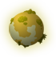
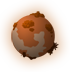
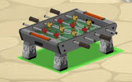
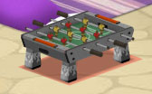
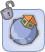
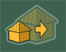

|
Frequently Asked Questions - lunes d’ekoloko
 Qu’est-ce que les lunes d’ekoloko?
ekoloko est une planète. Comme la Terre et Hetra, ekoloko a sa propre grande lune qui tourne autour d’elle. Mais comme Saturne, ekoloko est entourée d’un anneau composé de milliers de petites lunes. Dizzie Greenleaf et 3Top ont construit une petite pompe à eau, un système d’énergie solaire et un dôme d’oxygène sur chacune de ces petites lunes. Adam Greenleaf a décidé de permettre aux Pionniers les plus courageux de construire leur maison sur ces petites lunes pour produire de l’oxygène et de la nourriture pour toute la population d’ekoloko. Il existe plusieurs sortes de lunes d’ekoloko :
 Lune Tropicale Lune Tropicale
Le climat de la Lune Tropicale est très chaud et humide. Ce climat est favorable à beaucoup d’espèces de plantes.
Lune Désertique
La Lune Désertique offre des vues superbes et a un climat très sec. Les jours sont très chauds et les nuits sont froides. Il assez difficile de faire pousser des plantes sur une Lune Désertique, mais si tu es patient et persévérant tu peux réussir à cultiver des plantes rares et précieuses.
Lune Marécageuse
La Lune Marécageuse est plus brumeuse et mystérieuse que les autres types de lune. Le climat y est agréable mais extrêmement humide. L’eau n’y manque pas et oblige les explorateurs a faire attention où ils mettent les pieds. Des plantes rares et des champignons poussent sur la Lune Marécageuse.
Back To Top.

Comment recevoir ma propre lune?
Pour aller dans ta maison, clique sur  situé à gauche de ta barre de Chat. situé à gauche de ta barre de Chat.
Back To Top.

Est-ce que tout le monde peut avoir une lune d’ekoloko?
La mission de peupler les nouvelles lunes d’ekoloko n’est confiée qu’aux seuls pionniers. Les Ekos qui ne sont pas Pionniers peuvent seulement visiter les lunes habitées par des Pionniers ekoloko.
Back To Top.

Qu’y-a-t-il sur ma lune?
Chaque lune d’ekoloko a été équipée d’une tente toute simple, d’une pompe à eau, d’un dôme en plastic pour garder l’oxygène et d’une station d’énergie solaire. Très bientôt tu pourras développer ton propre jardin et faire pousser des plantes qui produiront de la nourriture et de l’oxygène pour toute la population d’ekoloko.
Back To Top.

Que faire sur ma lune?
Le grand plan d’Adam Greenleaf est de permettre aux Pionniers courageux de peupler et de chercher des nouvelles lunes où ils pourront produire de la nourriture et de l’oxygène pour toute la population d’ekoloko. Pour commencer, tu peux construire et décorer ta maison, inviter tes amis et apprendre sur ta lune personnelle.
Back To Top.

Comment avoir plus d’objets pour ma maison sur la lune ?
Tu peux acheter des objets supplémentaires pour ta maison en cliquant sur cet icône.  Sélectionne l’objet que tu souhaites, approuve ton achat, l’objet apparaîtra alors dans ton garde-meuble. Pour revenir dans ta maison clique sur. Sélectionne l’objet que tu souhaites, approuve ton achat, l’objet apparaîtra alors dans ton garde-meuble. Pour revenir dans ta maison clique sur.
Back To Top.

Comment vendre des objets que je ne veux plus dans ma maison?
Pour vendre des objets de ta maison va sur le mode « acheter et décorer », fais glisser l’objet que tu souhaites vendre de la maison ou de ton garde-meuble vers le menu en haut. Confirme la vente et quitte le mode de décoration en cliquant sur

Back To Top.

Est-ce que je peux réaménager ma maison?
Pour organiser les objets de ta maison rentre dans le mode « acheter et décorer » en cliquant sur l’icône. Sélectionne un objet et fais-le glisser à sa nouvelle place. Les objets peuvent être placés sur le sol, les murs ou le plafond.
Tu peux faire glisser l’objet dans toute la maison et le déposer dans les endroits signalés avec une lumière verte.

Une lumière rouge signifie que l’endroit est soit trop petit soit inadapté pour l’objet en question.

Pour faire pivoter un objet, clique dessus ouis sur.
Afin to sauvegarder cet arrangement et quitter ce mode, clique.
Back To Top.

Est-ce que je peux visiter d’autres lunes?
Pour visiter les lunes des autres Pionniers, clique sur le Pionnier en question puis sur  sur son menu personnel. Si la lune n’est pas fermée tu seras téléporté(e) là-bas immédiatement.
Back To Top.

Est-ce que je peux faire évoluer ma maison?
Pour faire évoluer ta maison sur ta lune tu dois être un Capitaine Lunaire pendant 15 jours au minimum. Après cette période minimum, tu pourrais faire évoluer ta maison en utilisant le bouton  dans le menu du haut. Attention : au moment où tu deviens Capitaine Lunaire et que ta maison peut évoluer, tous tes objets seront rangé dans ton garde-meuble
Back To Top.

Est-ce que je peux déménager vers une autre lune?
La mission spéciale confiée aux Pionniers par ekoloko par Adam Greenleaf comprend une condition : habiter sur une lune au moins 30 jours avant de pouvoir passer sur une autre lune. A la fin des 30 jours, tu pourras cliquer sur l’icône  et choisir une nouvelle lune. Remarque : quand tu déménages vers une autre étoile, tous tes objets seront transférés dans ton garde-meuble mais tu emménageras dans une tente toute simple. et choisir une nouvelle lune. Remarque : quand tu déménages vers une autre étoile, tous tes objets seront transférés dans ton garde-meuble mais tu emménageras dans une tente toute simple.
Back To Top.
Est-ce que je peux empêcher les autres de rentrer dans ma lune ?
Tu peux fermer ta lune en cliquant sur l’icône. Remarque : quand ta lune est fermée, aucun autre Eko ne pourra te rendre te rendre visite et tous les ekos qui étaient dans ta maison au moment où tu as fermé ton étoile seront téléportés vers ekoloko. Pour ouvrir ta lune, clique une nouvelle fois sur l’icône. Remarque : quand ta lune est fermée, aucun autre Eko ne pourra te rendre te rendre visite et tous les ekos qui étaient dans ta maison au moment où tu as fermé ton étoile seront téléportés vers ekoloko. Pour ouvrir ta lune, clique une nouvelle fois sur l’icône.

Back To Top.
Qu’arrive-t-il à ma lune si mon forfait pionnier se termine ?
Si ton forfait Pionnier se termine, tu n’auras plus accès à ta lune. Si tu réactives ton forfait Pionnier, tu auras de nouveau accès à ta lune avec toutes les modifications que tu avais faites.
Back To Top.
Que va-t-il se passer très bientôt sur ma lune ?
Les objectifs des Pionniers est de peupler les nouvelles lunes et de cultiver des plantes qui produiront de la nourriture et de l’oxygène pour toute la population d’ekoloko. Bientôt, tu pourras ajouter un jardin à ta maison et commencer à cultiver des plantes pour toi et les autres ekos. En plus de cela, de nouvelles lunes seront découvertes et peuplées au fur et à mesure.
Back To Top.
A quoi sert le panneau situé près de ma maison lunaire?
Le panneau situé près de ta maison donne accès au carnet de bord du Capitaine. En cliquant dessus, les visiteurs pourront lire le nom de ta lune, le nom du Capitaine (ton nom) et les aventures du jour.
Back To Top.
Que signifient les icônes concernant les objets de la maison ?
Que signifient les icônes apparaissant dans la fenêtre à gauche lorsque tu choisis un objet de la boutique pour la maison ?
Commençons tout d’abord par l’icône situé tout en haut à droite, puis nous expliquerons les autres icônes en suivant le sens des aiguilles d’une montre.

(1) Il indique la génération nécessaire pour pouvoir utiliser l’objet en question.
(2) Indique la quantité d’énergie nécessaire pour faire fonctionner l’objet. Au fur et à mesure que les jours passent sur ta lune, tu pourras faire évoluer ta station d’énergie solaire pour produire plus d’énergie.
(3) Il indique la Catégorie de l’objet (chaises, tables, etc.)
(4) Si l’objet comporte une montre (quand la montre n’est pas grisée) cela indique le nombre de jours d’utilisation de l’objet qu’il te reste.
(5) Indique le nombre de Point Pio que tu dois avoir pour utiliser cet objet
Back To Top.
|